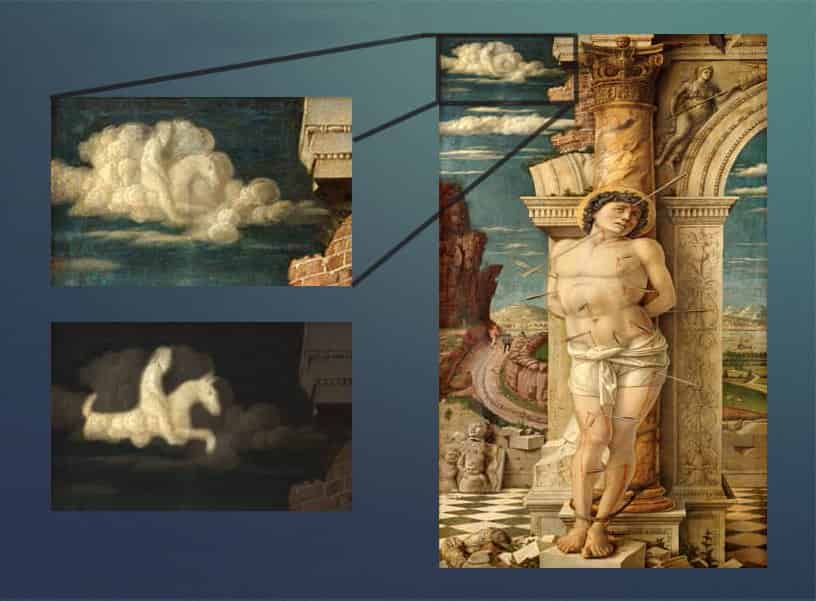
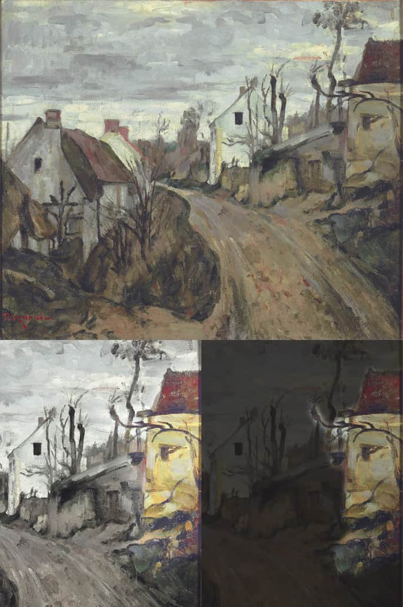
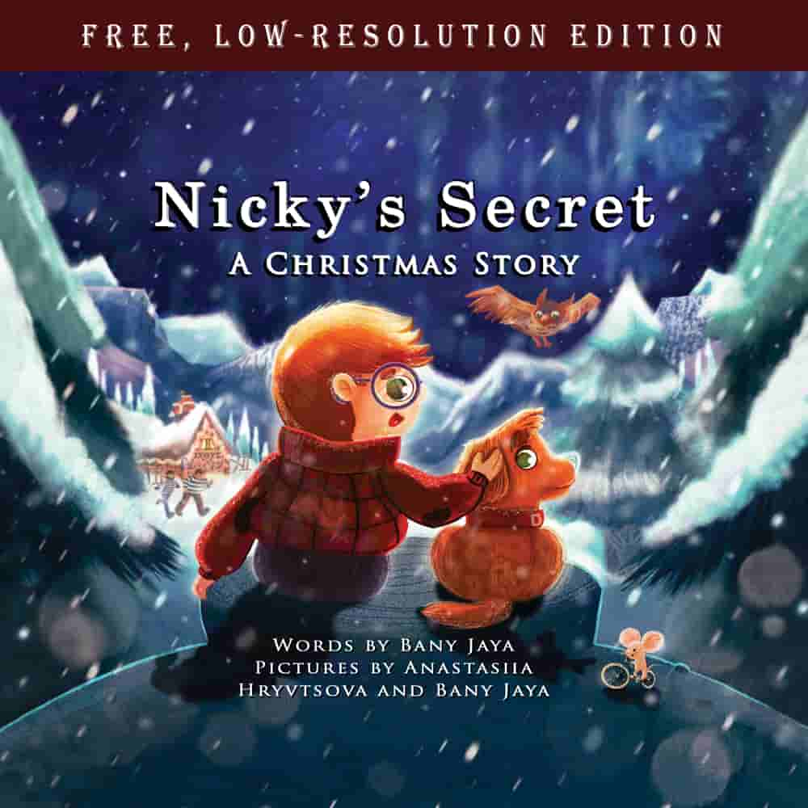

Independent Art Research · Entertainment and Education
Uncovering Secrets in Famous Artworks
For the past few years, I've privately catalogued what I believe are details that master painters and sculptors concealed in plain sight in their art. Most art scholars would treat the same marks as accidents of paint or perception, and they are often right. If you own or are thinking about buying a piece of fine art, an Art Review is a documented search for what might be hidden in yours. It is an opinion, not a valuation, authentication or attribution, and I make no claim it will affect what your piece is worth. I've even hidden clues to details I believe I have found in famous works of Christian art in the illustrations of my debut children's picture book titled, Nicky's Secret: A Christmas Story.
The US$99 Quotation Fee is how an Art Review begins. The review itself is quoted separately and custom to your piece, and starts at US$30,000.
My method is untested. It has never been validated, peer-reviewed, replicated by anyone else, or measured against any standard, and I hold no qualification in art history, connoisseurship, valuation or authentication. While I will be publishing on the methods in future, there is presently no publicly-available evidence that it reliably finds anything. An Art Review buys you a fixed number of documented hours of examination, and the report is my opinion about what I think I can see.
The Phenomenon
I Think Artists Hide Things In Plain Sight
What follows is my interpretation and opinion, not a finding of fact. I make no claim that any artist intended what I describe, that anyone else would see the same thing, or that any of it can be verified.
Pareidolia is the tendency of our minds to see faces and familiar forms in random visual noise like the texture of clouds, wood grain, or a slice of toast. Mainstream scholarship tends to treat such perceptions in artworks as noise rather than intent. My research suggests that many of history's greatest artists were fluent in the language of pareidolia, and used it intentionally, hiding symbolic details in plain sight for viewers willing to look closely enough to find them.
Below are two examples. The first one is fairly well-documented online. The other is one I noticed and, to my knowledge, isn't described anywhere else. You can drag your cursor across the first image to see what's hiding.You can drag your finger across the first image to see what's hiding.

Drag to zoom Touch to zoom
These aren't isolated cases. My independent research — which draws on art history, science, and religious symbolism — has catalogued many such details across famous paintings, often details significant to the work's subject matter.
Take the horse-rider hidden in the clouds above: it appears in The Martyrdom of Saint Sebastian, painted by Andrea Mantegna around 1470 and now in Vienna's Kunsthistorisches Museum. Two other versions of the same subject are also attributed to Mantegna — one in the Louvre, one in Venice's Ca' d'Oro.
I can't speak to the authorship of any of these versions, and I make no claim about which came first or which is by whose hand — those are questions for the museums, catalogue raisonné committees and conservators who are qualified to answer them. What I can say is what I think I see: a horse-rider form in the Vienna painting that reads to me as deliberate. It seems like real artistic invention that would not tend to arise from someone copying an existing artwork. Indeed, a hidden detail like this would be very difficult for a forger to notice, and thus to copy. But I'm not a licensed, accredited or certified art valuer, appraiser or authenticator, I hold no formal qualification in art history, connoisseurship, forensic art analysis or valuation, and my method has never been tested or peer-reviewed. So this is just my two cents.
If you'd like this kind of analysis applied to a specific piece — one you own, or are thinking about buying — that's exactly what the Art Review service further down this page is for. It is offered only to clients in the USA, the UK, Germany, the Netherlands, Canada (excluding Quebec) and Australia. In Germany and the Netherlands it is offered to business clients only — not to consumers buying for themselves. Please note that the service is provided in English only. See clause B1 of the Terms.
The Researcher
About
I'm Bany Jaya — independent researcher, and author of Nicky's Secret: A Christmas Story, a children's picture book filled with fascinating details hidden in famous works of Christian art.
For better or worse, I can't help but question what others consider "settled science". Having spent years carefully hiding artistic and other references inside the picture book I was working on, I began to notice anomalies in the works of some of these artists: deliberate-looking choices I couldn't quite explain. These artists seemed to be making the kinds of choices I was making. And what I found was compelling enough that I ended up hiding those very findings inside the illustrations of my own book. However, unlike the original artists, I intend to reveal at least some of what I have found so that others can appreciate the true depth of what these masters had created.
A small number of the details hidden in my book are existing discoveries by others, but most are not to be found anywhere in the published literature that I have searched. Of course, I might have simply missed such references, since papers do exist on findings arising from pareidolia.
If you own, or are considering buying, a painting or sculpture, I offer the same kind of analysis directly — as an Art Review.
The Book

Nicky's Secret: A Christmas Story
Nicky's Secret is written for 4-to-8-year-olds, in language conforming to both American and British English. Kids and adults alike tend to be surprised and delighted by the twists and turns the story takes, right up to the end.
Use the links below to read the entire book for free in low-resolution, watch it being read aloud on video, or to learn more about it from the fact sheet.
Want to buy it? View bookshops worldwide carrying Nicky's Secret. In some countries (i.e. presently the USA and Australia) you can even find the hardcover edition, which has noticeably better paper, binding and print quality than the softcover.
The Art Review
The Art Review: How It Works, What It Costs
What is hiding in that artwork you own or plan to buy?
An Art Review is a documented, unaided visual examination of photographs of your artwork, carried out by me personally over a set number of hours, looking for forms and details I believe the artist may have concealed deliberately. What you receive is a written report of what I found, or of what I did not find.
What this is not. It is not a valuation, an authentication, an attribution, an appraisal, or advice of any kind. I hold no formal qualification in art history, connoisseurship, forensic analysis or valuation, and my method has never been tested, peer-reviewed or published in the scientific literature. It is a subjective opinion arrived at by looking carefully — nothing more. Before acting on anything in a report, get independent advice from a suitably qualified professional.
How It Works
Australian dollar figures shown on this page are approximate, converted at an indicative rate of 1 USD = 1.4064 AUD (updated 23 September 2026). This is an estimate only. The amount actually debited will be set by your bank or payment provider at their rate on the day and may include foreign exchange margins and international transaction fees. The contractual price is the US dollar amount. Rates supplied by ExchangeRate-API.
Pay the Quotation Fee
US$99 via secure Stripe checkout. This protects you from frontrunning and limits requests to genuine clients.
Tell me about your piece
I'll ask you to send me a few digital photos — from several angles if it's a sculpture.
Get your custom quote
Within ten business days of receiving enough material to price the work, I'll be in touch with the precise fee and the number of hours it covers. Anything you send me as part of an Art Review is seen only by me — see clause B13 for how that stays true.
Approve & pay
Sign the Art Review Agreement I send you, and email me the scanned contract. I'll email you a countersigned copy with bank details, and you pay by bank transfer. You cover bank charges and currency conversion costs. The quoted fee must arrive in full.
Receive your Art Review
A written report setting out the hours worked, what I examined, and any hidden details I believe I found. If the report finds nothing, that's a complete delivery, with no refunds on that basis.
Start with the Quotation Fee
You'll provide your email address and a telephone number at the checkout. Your number is provided only so I can reach you about your order if email fails or something is urgent. The receipt you get is your dated proof of claim under my frontrunning promise. The button opens a new window to the secure Stripe payment gateway. Paying the fee means you accept the Art Review Service Terms, which are also linked at the checkout.
Before you pay, check the Schedule of Prior Analysis to make sure your artwork is not on that list. Artworks on that list do not benefit from all the confidentiality guarantees.
Before you pay, a short eligibility check. I supply this service in six jurisdictions only, and in two of them to business clients only. Your answers are not saved or sent from this page — you will be asked the same questions again at the Stripe checkout, where they are recorded against your order. Business clients in Germany and the Netherlands: I will ask you by email for your VAT identification number, and verify it, before any work begins.
Where this service is offered. This service is offered only to clients in the USA, UK, Germany, Netherlands, Canada (but not Quebec) and Australia, and only to business clients in Germany and the Netherlands. I do not market to, solicit or accept standard engagements from other jurisdictions. Unsolicited enquiries may be considered case-by-case but often cannot be accepted owing to legal constraints, and any such engagement would be on separate, individually negotiated terms. Enquiries are welcome here.
If you are a consumer in the United Kingdom: you have 14 days to cancel this Quotation without giving a reason, and the checkout asks you two separate questions: whether you want me to start work before those 14 days are up, and whether you accept that the right to cancel ends once the report is delivered. Nothing is pre-ticked. If you answer yes to both and then cancel, you pay only for the work actually done. If you don't, I won't start until the 14 days have passed. Consumers in Canada have cancellation rights under their own provincial law instead — they are described in clause B26. Germany and the Netherlands are business-only, so no consumer cancellation right arises there. Full details, and the cancellation form, are in Part B of the Terms.
In Germany and the Netherlands this service is supplied only to businesses, professionals and public institutions acquiring it for business purposes. It is not offered to, marketed to, or available to consumers within the meaning of §13 BGB, or to consumers in the Netherlands, and a consumer engagement in either country cannot be accepted on any terms. You must hold the artwork for business, professional, institutional or investment purposes — not for personal enjoyment or private collecting.
Fee Estimate
While every quote is custom, the examples below should help you estimate your likely fees and turnaround time. Each estimate below covers three (3) review passes. Three is the default number I quote for. If you want more passes, or fewer, say so and the quote and the Services Agreement will state the number we agree on — see clause B6 of the Terms. A review pass is a full manual scan of the artwork for hidden details, usually lasting from several hours to several days for very large and detailed works. Preparation time is required before each session — not unlike letting your eyes adjust before stargazing — with several days gap between passes producing the best results. Fees increase with the number of hours, the size of the piece, and its level of detail. The hidden details from the artworks I've concealed in my book typically required around eight (8) review passes to uncover, but diminishing returns tended to set in beyond the fourth or fifth pass. Turnaround figures are indicative estimates, not guaranteed dates — see clause B3 of the Terms. Because passes are deliberately spaced several days apart, more passes means a longer elapsed time.
How the fee is calculated. Your quote states an hourly rate and the total number of examination hours it buys, organised into review passes. The fee is the rate multiplied by the hours. I keep a contemporaneous time record and give it to you with your report. You are paying for those hours of examination, not for a result. If these hours produce no findings, the report says so and the engagement has been performed in full, with no refunds permitted on this basis. I don't give verbal findings, and anything said before the report lands is preliminary. If a piece warrants more hours than we agreed, I may suggest additional ones, but no extra hour is worked or charged unless you agree in writing and pay for it first, and you are never obliged to accept the suggestion.
Each figure below is the total amount payable. I am not currently registered for Australian GST, so no GST is charged on any fee, wherever you are. If I become registered, the price will not change, but the price shown to Australian clients will include GST and prices to clients outside Australia will be unaffected. Australian dollar figures are approximate, converted at an indicative rate of 1 USD = 1.4064 AUD (updated 23 September 2026); the amount actually debited is set by your bank at its rate on the day and may include FX margins and international transaction fees. The contractual price is the US dollar amount. Bank charges, telegraphic transfer fees and currency conversion costs are borne by the client.
Tap any image below to view it in full screen mode.
Eligibility
Before accepting an engagement or a payment, I check your name — and the name of anyone paying on your behalf — against the Australian Government's DFAT Consolidated List, the United States OFAC Specially Designated Nationals list (and, where the dealing warrants it, the OFAC Sectoral Sanctions Identifications list), the UK OFSI consolidated list, and the EU consolidated list. I decline only where that check returns a match, or where a specific sanctions measure applies to the dealing. I do not refuse anyone solely because of their nationality, country of residence, or national or ethnic origin. If a payment is frozen or rejected by a bank or an authority, I will deal with the funds as Australian law requires and refund anything I am not permitted to keep. I may also decline an engagement on any of the grounds listed in clause B12 of the Terms, in which case the Quotation Fee is refunded in full.
An Example
Below is a video that details selected findings from a study I undertook that loosely resembles the kind of analysis I perform as part of an Art Review.
Nothing is sent to YouTube until you press play. Once you do, YouTube — a Google service — receives your IP address and may store data on your device under Google's own privacy policy, which we do not control. See our Privacy Policy.
Limitations on Assurances
An Art Review can't guarantee that an artist intentionally hid any detail I find because nobody can be certain of an artist's true intent, and interesting forms can appear by pure chance. I can't guarantee any effect, positive or negative, on your artwork's valuation, authenticity, or attribution, and I can't guarantee that every hidden detail the artist has included — or any detail at all — will be found. What you're paying for is a sincere, disciplined attempt to find what might be hidden in plain sight, applying pareidolia carefully and without slipping into delusion. These findings can then be taken to professional, accredited, or certified art professionals for a formal opinion on possible implications for valuation, authentication, and attribution of the artwork.
I am not a licensed, accredited, or certified art valuer, appraiser, or authenticator, and I hold no formal qualification in art history, connoisseurship, forensic art analysis, or valuation. My opinions are based on visual comparison and independent research and should not be relied upon as a substitute for formal authentication (e.g. by a recognised catalogue raisonné committee, forensic conservator, or accredited valuer) or a certified valuation (e.g. by a valuer accredited under the relevant professional body in your jurisdiction).
The method is untested. The techniques used in an Art Review have not been validated, peer-reviewed, replicated by anyone else, or tested against any published standard. There is no body of evidence showing that they reliably find concealed content, and no accreditation, endorsement or professional recognition stands behind them. What you receive is my opinion about what I think I can see in an image. It is not a valuation, an appraisal, an authentication, an attribution, or an expert report, and it should not be described as any of those things to anyone else.
The opinions provided in an Art Review therefore reflect my personal research and visual analysis. Any decision to buy, sell, insure, restore, or otherwise act upon an artwork discussed on this site or in any consultation should be made only after obtaining independent advice from a suitably qualified and, where relevant, licensed professional. My liability for loss or damage arising from reliance on those opinions is limited as set out in the Terms, except to the extent that liability cannot be excluded under the Australian Consumer Law or under any other law that applies to you and cannot be excluded.
Addressee only — no third-party reliance. An Art Review report is prepared solely for the client named in it, solely for the purpose stated in it. No other person may rely on it. I accept no duty of care and no liability of any kind to any other person — including, but not limited to, a buyer, a seller, an agent, an auction house, an insurer, a lender or a valuer — whether or not I knew the report might be shown to them. If you pass the report on to a third party, make sure to convey this limitation to them as well.
Limit of liability. Nothing in the Terms excludes or limits liability that cannot lawfully be excluded or limited, including liability for death or personal injury caused by my negligence, fraud, or any liability under mandatory consumer law. Subject to that, my total liability arising out of or in connection with the service is limited to the Service Fee actually paid. That limit does not apply to the extent that the mandatory law of your own place of residence provides otherwise.
General Enquiries
Get In Touch
Have a general question that isn't answered in the FAQ below? Send it here.
This form is for general enquiries only. If you're asking about pricing or requesting a quote, please use the Quotation Fee button above instead — pricing questions sent through this form won't usually receive a reply.
I supply this service in six places only: the USA, the UK, Germany, the Netherlands, Canada excluding Quebec, and Australia, as well as to business clients in Germany and the Netherlands. You are welcome to enquire about a bespoke arrangement from outside these jurisdictions.
This form isn't a confidential channel, and neither is emailing me directly — both may, in future, be seen by a staff member. If confidentiality matters to you, begin with a Quotation Request instead: that's what reaches me personally, and brings the confidentiality guarantee in clause B13 of the Terms with it.
NOTE: A bespoke agreement will not often be possible. The obstacles are legal rather than commercial — consumer, tax, language, and data-protection rules that a one-person business working in English cannot meet in every country. Most of what makes an unlisted country difficult is its consumer-protection laws, which do not apply where the client is contracting for a trade, business or profession. If you are enquiring on behalf of a gallery, dealership, auction house, insurer, fund or other business, please say so and provide your registration or VAT number.
Questions, Answered
Frequently Asked Questions
Are my identity and the findings of my report confidential?
Your identity — including your name and your address — the photographs and information you send me, and the fact that you engaged me at all stay confidential permanently — unless and until you, your legal personal representative, or your successor in title if you are a company or institution, give me express written permission otherwise. The contents of your report are confidential for five (5) years from the date I deliver the report to you, and that particular obligation then ends. I am also permanently barred from connecting you, or any other named person, to any named artwork. So even when the five years are up, I can't name you, can't say a piece was reviewed for a client, and can't publish your photographs, which stay yours. I may disclose confidential information in the following circumstances: with your prior written permission; where a law, a court or a regulator compels me; to my own legal, accounting or insurance advisers, who are themselves bound to keep it confidential; and so far as necessary to bring or defend a claim between us. The obligation also does not apply at all to information that is already public through no fault of mine, that I can show by dated records I already held before you sent it, that I developed independently without reference to anything you gave me, or that I lawfully received from a third party who was under no duty of confidence. Those limits are set out in full at clause B13 of the Terms — please read them before you pay.
What is not confidential: the artwork itself. My promise covers your information and what I found for you. It does not cover the artwork, its existence, its attribution, its history, or any other fact about it. It also doesn't cover artworks I have already analysed independently. This includes artworks listed on the Schedule of Prior Analysis, those with references in my picture book, everything covered on my YouTube channel, and everything covered on my other public channels, including material I publish after your engagement begins. I remain free to discuss and publish my own independent work on all of it. If your artwork is on that list when you request a quotation, I'll decline the job and refund you in full unless you tell me in writing that you want to go ahead anyway. Please check the exclusion list before you pay.
There are four narrow exceptions to confidentiality, set out in clause B13 of the Terms: information already public through no fault of mine, information I already held on dated record, information I worked out independently of you, and information I lawfully received from someone else who owed no duty of confidence. I also have to keep your information secure, and if anything is lost, stolen or accessed without authority I have to tell you promptly.
If the artwork you name is one I have already analysed, I will tell you straight away, decline the job, and refund the fee in full. Those artworks are published in advance on the Schedule of Prior Analysis, so you can check before paying anything.
And one you cannot check in advance. I will not review an artwork I have already reviewed for someone else within the previous five years, because a second report would cover the same ground and include duplicated findings, and that would put the earlier client's confidentiality at risk. If your artwork is one of those, I will tell you that I cannot accept the engagement and I'll refund you in full — the US$99, and any Art Review fee you might have paid. I will not tell you the reason, because saying so would itself reveal that someone else engaged me to review that artwork. I will not confirm, deny or discuss any speculations regarding this, whoever asks. This is unavoidable in the event that a second person pays to review a painting I've previously worked on. See clause B30 of the Terms.
If you find something interesting in an artwork I'm considering buying, will you try to buy it yourself?
Absolutely not. For five (5) years from the time you pay the Quotation Fee, I personally will not pursue any transaction involving your artwork, and I will not publish any finding, image or analysis about it that came out of your review — not in a video, an article, a book, or anywhere else. That promise is given by me personally and binds me personally, and it survives the end of any engagement. Your dated Quotation Fee receipt serves as proof of your prior claim. This is why I avoid beginning any discussion with a prospective client, or wish to know the identity of the artwork, until after the Quotation Fee is paid.
Two things end it early, and you should know both before you pay. The promise protects an artwork you have actually commissioned me to review. It stops applying, or never applies at all, if either of these happens: (i) you pay the US$99, receive your quote, and do not enter into a Services Agreement for that artwork within sixty (60) days of the date of the quote; or (ii) I refund the Quotation Fee to you prior to you paying for the Art Review. In either case I am free from that point to research, write about, publish on, and accept another client's instructions in respect of that artwork. What never lapses is your side of it: your identity, your address and your photographs stay confidential permanently, and I am permanently barred from connecting you — or any other identified person — to any identified artwork unless and until you, your legal personal representative, or your successor in title if you are a company or institution, give me express written permission otherwise. The exact wording is at clause B13 and clause B14 of the Terms.
Do you specialise in a particular genre?
Religious art is my preferred genre, and where I do my best work. It's the subject matter I find most engaging, and where I feel I am most likely to correctly identify intentional concealment by the artist.
Do I need to be from a particular country to use this service?
Yes. The service is offered only to clients in the United States, the United Kingdom, Germany, the Netherlands, Canada excluding Quebec, and Australia. In Germany and the Netherlands it is available to business clients only, so if you are buying for yourself there rather than for a trade or profession, I cannot accept the engagement on any terms. I do not market to, solicit or accept standard engagements from anywhere else at this time. You are welcome to send a request for a bespoke agreement from outside these countries, where any such engagement would be on separately negotiated terms. This is most likely to work out when you are a business client intending to use the service for business purposes, for which you must provide your relevant business registration number, or your VAT number.
I don't offer this service to anyone resident or established in Quebec (Canada) due to French language obligations that arise there. It applies to everyone resident or established in Quebec on identical terms, whatever their language, nationality, or ethnic or national origin, and it has no effect on anyone outside Quebec. The rest of Canada is unaffected, and a French-speaking client anywhere else is welcome on exactly the same terms as everyone else, on the understanding that the service itself is delivered entirely in English. Clause B1 of the Terms addresses this.
If you're in Quebec and somehow pay the US$99 Quotation Fee anyway, I'll refund it in full — no deduction — and I'll leave it there. If it has gone further than that and I've already started the Art Review itself before either of us realises, I refund the Art Review fee less the hours actually worked at the rate you'd already agreed, and I give you my time record with it. Tell me early and there is nothing to deduct. Clause B1 of the Terms sets this out.
I do check your name, and the name of whoever is paying, against the Australian Government's DFAT Consolidated List, the United States OFAC Specially Designated Nationals list (and, where the dealing warrants it, the OFAC Sectoral Sanctions Identifications list), the UK OFSI consolidated list, and the EU consolidated list before accepting an engagement. A small number of sectoral and region-specific measures exist, and if one applies, I'll inform you and refund your fee in full.
The contract is governed by the law of New South Wales, Australia. If you are a consumer somewhere else — the UK, Canada or Australia — that doesn't take away the consumer protections you have at home, and it doesn't stop you bringing a claim in your own courts. Business clients, including all clients in Germany and the Netherlands, are on a different track: disputes go to arbitration seated in Sydney under the ACICA Rules. That arbitration agreement comes into existence only when a business client separately and expressly agrees to it in writing, by initialling the arbitration box in the Art Review Services Agreement before signing. Until that happens, there is no arbitration agreement and the courts of New South Wales apply as normal. No consumer is ever required to arbitrate. See clause B31.
Is the US$99 Quotation Fee ever refunded?
Yes, in a number of situations, all set out in clause B4 of the Terms — that clause is the complete list, and it governs. In summary: if I decline to quote or decline the job on any of the grounds listed there; if your artwork turns out to be one I have already analysed — on the Schedule of Prior Analysis, in my picture book, or covered on my YouTube channel or other public channels — and you'd rather not go ahead without the usual confidentiality; if I can't lawfully deal with you; if I don't get a quote to you within ten business days of receiving enough material to price the work; if you change your mind within 14 days and haven't yet sent me anything about the artwork; if you turn out to have been in Quebec when you paid; if I have already carried out an Art Review of the same artwork for another client, so that clause B30 requires me to decline; or if you are a consumer resident or established in Germany or the Netherlands, where I supply business clients only. In each case you get the whole US$99 back.
Consumers in the UK have a separate statutory right to cancel within 14 days without giving any reason, whether or not one of the above applies. If you asked me to start work during those 14 days and then cancel, you pay only for the hours actually worked; otherwise you get a full refund. Consumers in Canada have cancellation rights under provincial law, described in clause B26. Germany and the Netherlands are business-only, so no consumer cancellation right arises there.
What it doesn't cover is simply deciding not to proceed once you've seen the quote, or the quoted number being higher than you'd hoped. Pricing your piece is real work and it gets done either way. Nothing here limits any right you have under the Australian Consumer Law or the consumer law of your own country. Clause B4 of the Terms sets this out in full.
What payment methods are available?
You pay the Quotation Fee by card through Stripe. Stripe decides which cards and payment methods it accepts in your country. If you go ahead with the full Art Review after receiving your quote, you'll pay by telegraphic transfer / international bank transfer to my Australian bank account — but only after you've returned a signed agreement and I've sent you a countersigned copy. All fees are quoted in US dollars and each quoted figure is the total amount payable. I am not currently registered for GST, so no GST is charged on any fee, wherever you are. If I become registered, the price won't change, but will include GST for Australian clients, while clients outside Australia will be unaffected. Bank charges, intermediary bank fees and currency conversion costs are borne by you, and the quoted amount needs to reach the account in full, so please instruct your bank accordingly. Stripe may show and charge the US$99 in your own currency; the rate and any conversion fee are set by Stripe or your card issuer, not by me, so the amount debited can differ slightly from US$99.
How do I send you the artwork for analysis?
When you pay the Quotation Fee, you'll provide your email address and a telephone number on the Stripe payment form. I'll then email you personally to arrange submission of the artwork. Everything after that is done by email. You'll send digital photos of the piece (several angles for sculpture) and some background details, so I can prepare an accurate quote. You keep the copyright in everything you send; I only use it to perform the analysis. Please don't send identity documents or photographs of yourself — I don't need them and won't keep them. Within 30 days of delivering your report I delete or return your images and notes, keeping only one archival copy for my own records, my tax obligations and in case a legal claim is ever made.
Who owns the report, and what can I do with it?
I keep the copyright, because the report is the output of my own method and I need to be able to stop other people repackaging and selling it. That doesn't restrict you. Once you've paid in full, you get a permanent, irrevocable licence to use the report however you need to for your artwork — hand it to valuers, appraisers, conservators, insurers, auction houses, lenders, your lawyer or accountant, a prospective buyer or seller, or put it before a court. They can copy it for those purposes too.
Don't sell or licence the report as a product in its own right, and if you pass on part of it, make clear it's an extract. Clause B15 of the Terms has the exact wording. Anything you send me — your photos, your background notes — stays yours.
Additionally, the report is prepared solely for the client named in it, solely for the purpose stated in it. No other person may rely on it. I accept no duty of care and no liability of any kind to any other person — including, but not limited to, a buyer, a seller, an agent, an auction house, an insurer, a lender or a valuer — whether or not I knew the report might be shown to them. If you pass the report on to any third party, it must be provided with this limitation conveyed as well.
Do I have to sign anything?
Not for the US$99 Quotation Fee — paying it at the Stripe checkout is where you accept the terms, which are linked there. For the Art Review itself there is a full Art Review Services Agreement I will provide as part of my quotation process. It names the piece, the hourly rate, the number of examination hours, the fee and the timetable, and it ends with a table of acknowledgements you initial box by box — confirming, among other things, that you understand you are buying the search for hidden details rather than ay guarantee of finding any, that I hold no formal qualifications, that my method is unproven, and that I carry no professional indemnity insurance due to common exclusions relating to art consulting. You print the agremeent, complete it, initial it, sign it, scan every page, and email the scan back to me. I countersign and send it back. Only then do you pay. At these amounts, it's in both our interests to have the specifics written down and signed rather than inferred from a payment.
Do you have qualifications that authorise you to analyse, value, attribute, and authenticate art?
No.
Any observations, opinions, and analysis presented on this website and as part of my Art Reviews that relate to attribution, authenticity, or value of any artwork are my personal opinions provided only for educational and entertainment purposes. They reflect my personal, independent research and visual analysis and do not constitute a formal appraisal, authentication, or valuation. The findings of an Art Review can only be considered clues and pointers that you can present to licensed, accredited, or certified art professionals to obtain a formal opinion on possible implications for valuation, authentication, and attribution of the artwork.
I am not a licensed, accredited, or certified art valuer, appraiser, or authenticator, and I hold no formal qualification in art history, connoisseurship, forensic art analysis, or valuation. My opinions are based on visual comparison and independent research and should not be relied upon as a substitute for formal authentication (e.g. by a recognised catalogue raisonné committee, forensic conservator, or accredited valuer) or a certified valuation (e.g. by a valuer accredited under the relevant professional body in your jurisdiction).
Any decision to buy, sell, insure, restore, or otherwise act upon an artwork discussed on this site or in any consultation should be made only after obtaining independent advice from a suitably qualified and licensed professional. My liability for loss or damage arising from reliance on the opinions expressed on this website, or in any Art Review report, is limited as set out in the Terms, except to the extent that liability cannot be excluded under the Australian Consumer Law or under any other law that applies to you and cannot be excluded.
How would I know whether your techniques are scientifically legitimate?
If legitimacy arises from a consensus of individuals who are recognised as experts within a field, I don’t think you can. The techniques I have developed, and the research I have performed, are not public. They are proprietary. It is my claim that they represent innovation in a field that has traditionally tended to ignore findings borne out of pareidolia. As a result, my methods are not part of the body of recognised, peer-reviewed scientific literature. This means that there are no formal qualifications to train anyone to perform the particular kind of technical research services I am offering. What makes it particularly hard to absorb into the scientific literature is the inherent subjectivity involved when dealing with the level of the human perceptual system where pareidolia operates. There is a real possibility that no widespread scientific consensus ever forms around these techniques. Since most people equate a consensus of experts to ‘the truth’, you might never get the consensus you require to feel confident that you have the truth. But the scientific method was designed precisely to stand up to even the most unanimous agreement of recognised experts in any field. And the scientific method is ultimately performed by individuals.
Do you provide an opinion on the authenticity and attribution of artworks subjected to an Art Review?
No. I do not provide concrete opinions on attribution and authentication because I am not formally qualified, licensed, accredited or certified to do so. I use proprietary analytical methods to surface hidden details in an artwork. If other other works attributed to the same artist contain similar such details, the similarities between the hidden details in such works could form the basis of an argument for attribution and authentication. You can then take such information to a qualified, licensed or certified professional to perform formal assessments, such as attributions, authentications, or valuations. I do not provide any actual authentications or attributions. I only provide the investigative service that has the potential to inform such processes.
Do you perform valuations and art appraisals?
No, I do not. I only attempt to uncover any details that might have been concealed using pareidolia. While these could have an effect on the amount of interest in a piece of art, I make no claim about what effect, if any, that has on the demand for, or the value of a piece of art — see clause B7 of the Terms. Valuations and appraisals must be performed by qualified, licensed, accredited, and/or certified art professionals.
Do you guarantee that my artwork will increase in value, or at least not decrease in value as a result of the findings of an Art Review?
No. I offer no guarantees or assurances in regards to the effects of an Art Review on the valuations of any artwork.
What rules govern the use of this site and the services you offer?
Use of this site is subject to our Website Terms of Use. Collection and use of personal information is subject to our Privacy Policy.